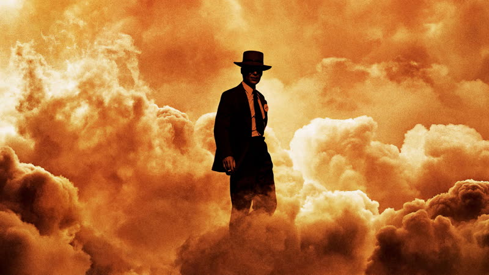
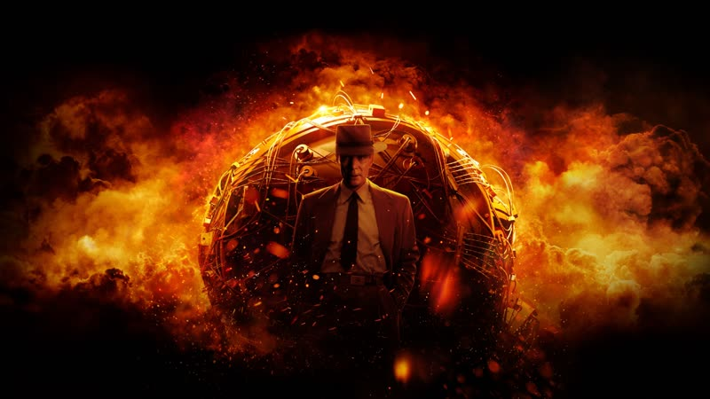
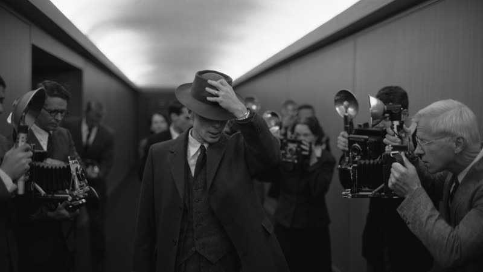
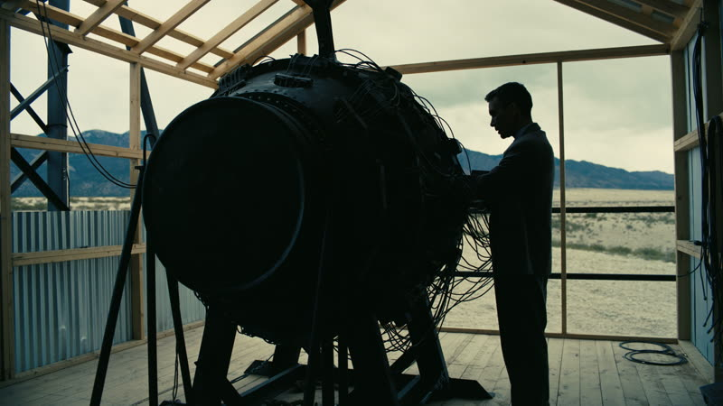
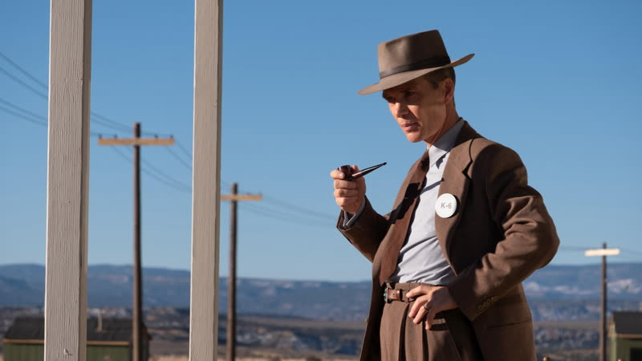

2023
Oppenheimer
A physicist builds the atomic bomb, then is tried for his loyalty, told in two alternating modes that separate his view from everyone else's.
How it plays with time
The film cuts between two modes. Colour scenes follow Oppenheimer's life from physics student through Los Alamos to his 1954 security hearing, mostly through his own eyes. Black-and-white scenes follow the 1959 Senate confirmation hearing for Lewis Strauss, a more detached view that eventually loops back to reframe the colour story. source
Themes
- Guilt
- After the bombings of Japan, Oppenheimer meets the President in the Oval Office and tries to say he feels he has blood on his hands. The President dismisses him with contempt, and the scene marks the point where his remorse stops being something anyone in power wants to hear. source
- Deception
- Questioned by a security officer, Oppenheimer invents a story to shield his friend Haakon Chevalier from an espionage inquiry. The lie seems small at the time but is dredged up years later and used against him at the 1954 hearing. source
- Fear
- In one of Oppenheimer's visions, a young woman shown as Nolan's daughter Flora is disintegrated by a nuclear blast. Nolan has said it was meant to show that the ultimate destructive power ends up destroying the people closest to you. source
- The machine
- At the Trinity test, the countdown builds with ticking and anxious talk among the scientists, the device is fired with real explosives rather than computer effects, and the score drops out at the critical moment so the audience watches a weapon outgrow its makers in near silence. source
- Time
- The black-and-white 1959 hearing is intercut with the colour history so that the viewer learns Strauss's grievance in fragments. A closing flashback to an earlier conversation with Einstein then changes what that grievance was really about. source
Where it came from
- Nolan wrote the screenplay in the first person, his first time doing so, so the colour scenes are seen through Oppenheimer's eyes and the black-and-white scenes read as more objective. Nolan source
- In a Total Film interview, republished by Dark Horizons, Nolan described the colour scenes as subjective and the black-and-white scenes as objective. Nolan source
- Nolan drew on the Mozart and Salieri relationship in Amadeus when shaping the rivalry between Oppenheimer and Strauss. Nolan source
- Nolan has said he knew of Oppenheimer from youth, partly through a 1985 Sting song, and Robert Pattinson gave him a book of Oppenheimer's speeches in 2019. Nolan source
- A search snippet reports Nolan linking the colour/mono device to his earlier use of colour to separate subjective from objective information in Memento. Not confirmed from a fetched page. Nolan source unverified
Stills





Stills © their studios, used here for commentary and criticism.
People who keep coming back
- Emma Thomas, Producer: also following, memento, insomnia, batman begins, the prestige, the dark knight, inception, the dark knight rises, interstellar, dunkirk, tenet, the odyssey
- Hoyte van Hoytema, Cinematographer: also interstellar, dunkirk, tenet, the odyssey
- Jennifer Lame, Editor: also tenet
- Ludwig Göransson, Composer: also tenet
- Cillian Murphy, J. Robert Oppenheimer: also batman begins, the dark knight, inception, the dark knight rises, dunkirk
- Matt Damon, Gen. Leslie Groves: also interstellar, the odyssey
How it was received
Critics were close to unanimous in praise, singling out the screenplay, Cillian Murphy and the IMAX photography. Complaints were that the final act ran long, the Trinity sequence disappointed some, and the cameos and female roles were thin. Metacritic 90 source. Rotten Tomatoes 93% source.
It won seven Oscars including Best Picture, Director, Actor and Supporting Actor, and grossed roughly $983 million. It sits in several decade-best lists: 54th on IndieWire's best of the 2020s, and 65th on the New York Times list for the 21st century so far. The Letterboxd rating was not readable in the fetch.
Three things most people miss
- The black-and-white sequences needed film that did not exist. Kodak reportedly made a new Double-X 65mm black-and-white stock for the IMAX and Panavision cameras, which also needed modified gates. Taken from search-result snippets only; the page itself returned a 403. source
- The Trinity test is carried by silence as much as sound. A University of Sydney composer argues the score builds with layered strings and cross-rhythms, then drops out as the button is pressed, and that the same trick is used again in Oppenheimer's post-bombing speech. source
- Strauss's grudge rests on a misreading. The closing flashback shows the Einstein conversation was about the risk of a runaway chain reaction, not about Strauss, which shifts the film's weight from his wounded pride to Oppenheimer's guilt. source
Cast
Cillian Murphy as J. Robert Oppenheimer; Emily Blunt as Katherine "Kitty" Oppenheimer; Matt Damon as Gen. Leslie Groves; Robert Downey Jr. as Rear Admiral Lewis Strauss; Florence Pugh as Jean Tatlock.